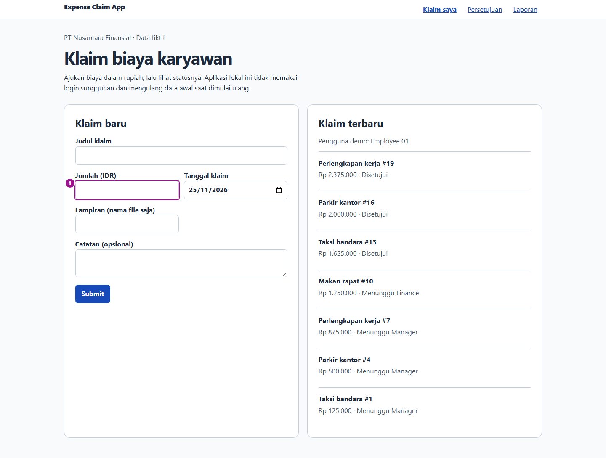
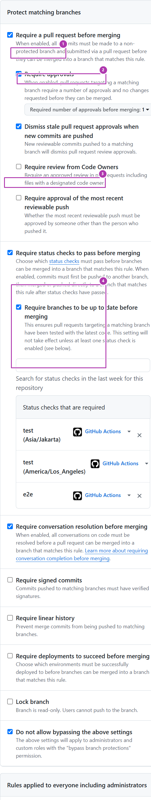
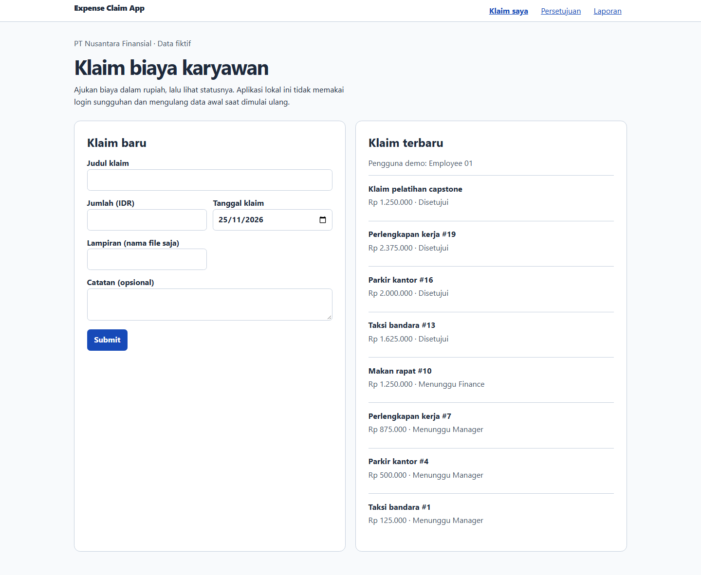
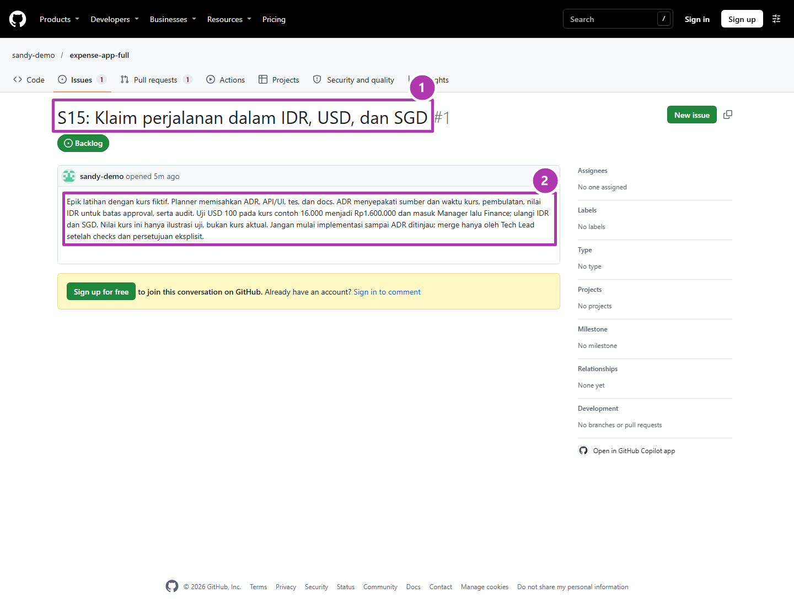
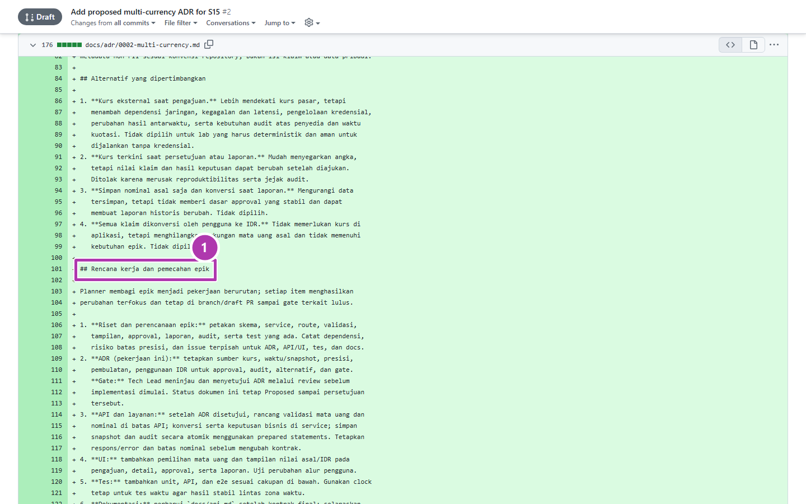
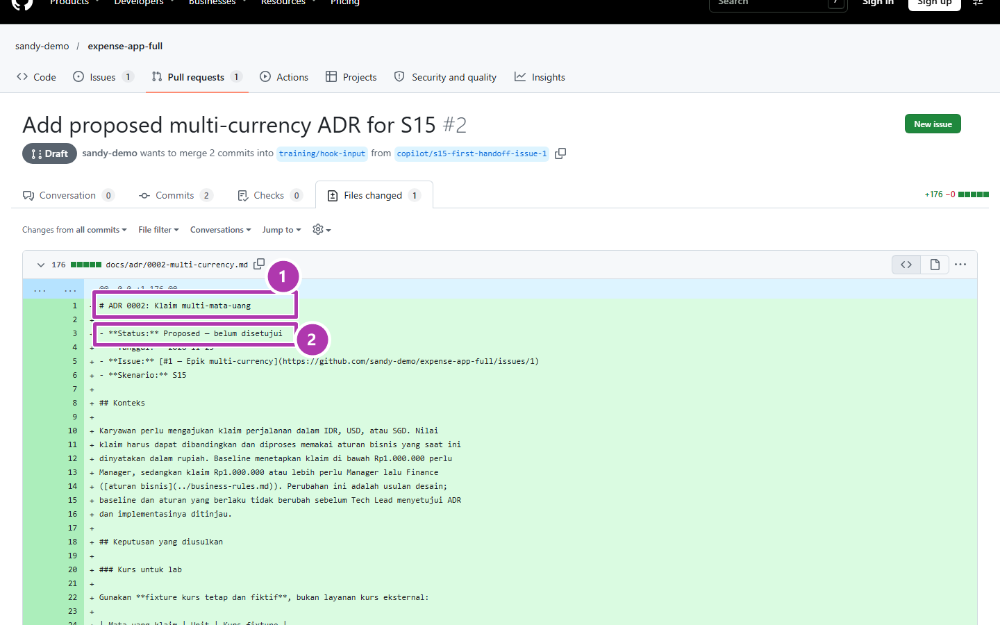
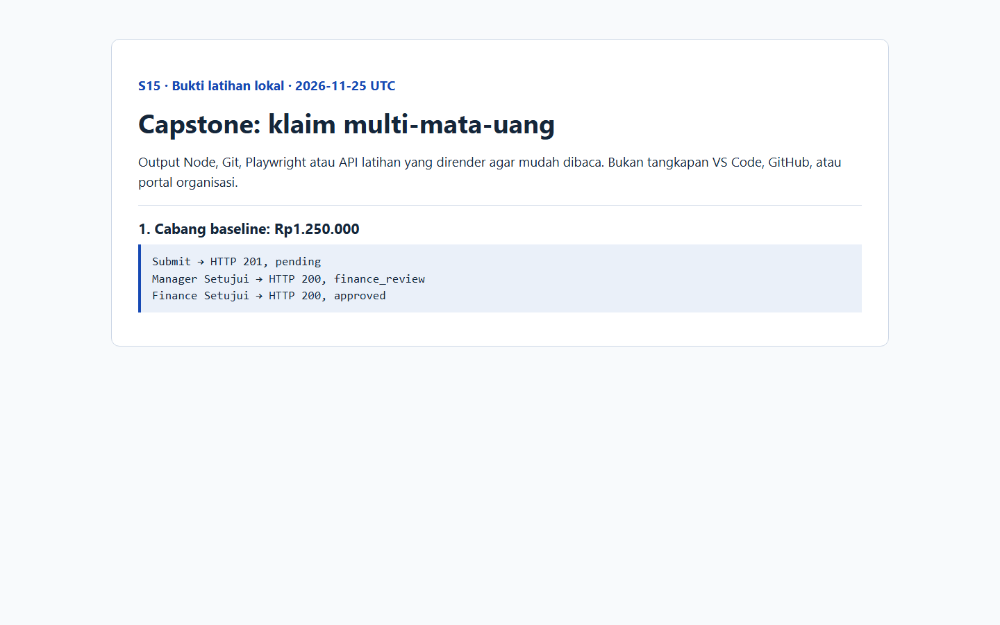
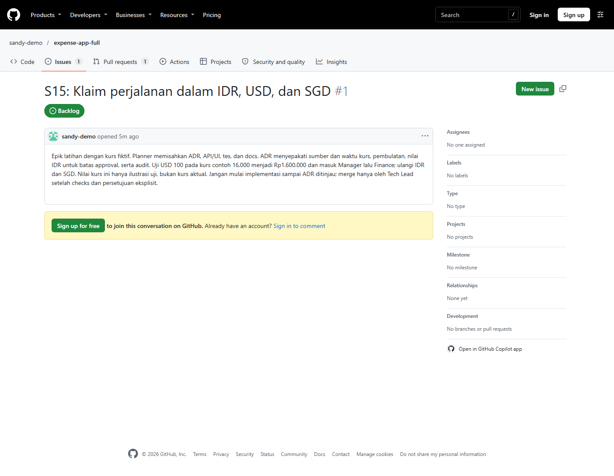

S15 · Level 5 — Governance dan capstone
Capstone: klaim multi-mata-uang
Planner → ADR → draft PR → CI → reviewer dan CodeQL → merge manusia → docs → audit.
Status latihan: Template tersedia, epik dan ADR nyata; belum masuk implementasi/merge. Ikuti langkah · Cek hasil · Langkah live · Ulangi dari awal.
Masalah yang dihadapi
Lina perlu klaim IDR, USD, dan SGD. Tanpa desain dan gate, review serta docs menyusul belakangan.
Kerugian: Rilis tertunda dan perubahan finansial sulit diaudit.
Masalah pada baseline
issues/S15.md
Lihat potongan atau catatan sumber
ADR memutuskan kurs, waktu kurs, pembulatan dan limit persetujuan dalam IDR.Solusi dan alur
Planner → ADR → draft PR → CI → reviewer dan CodeQL → merge manusia → docs → audit.
Alur kerja ringkas
PM dan Architect · Buat epik dan ADR
Hasil: Repo turunan expense-app-full sudah punya issue #1 dan draft #2 Proposed. Kurs contoh bukan kurs pasar.
Aplikasi baseline · Buat dan setujui klaim IDR
Hasil: Rp1.250.000 masuk Manager, Finance, lalu approved dalam data fiktif.
Tech Lead · Tahan implementasi sampai desain disetujui
Hasil: Review manusia, checks, dan keputusan merge harus benar-benar terjadi. Tidak ada UI multi-currency live pada checkpoint ini.

- Lina menulis epik bersama Planner.
- Architect menulis ADR; Bima menyetujui.
- Copilot mengajukan draft PR.
- CI memperlihatkan tes.
- Review Board dan CodeQL memberi bukti.
- Bima memutuskan merge.
- Docs Sync dan Triage menangani tindak lanjut.
- Yoga memeriksa metadata audit sepanjang alur.
Lihat sumber Mermaid
flowchart TB
a["1 · Lina + Planner"] -->|Tulis epik dan task| b["2 · Architect + Bima"]
b -->|Setujui ADR| c["3 · Copilot"]
c -->|Ajukan draft PR| d["4 · CI"]
d -->|Sajikan tes| e["5 · Reviewer + CodeQL"]
e -->|Rekomendasikan keputusan| f["6 · Bima"]
f -->|Merge di repo turunan| g["7 · Docs Sync + Triage"]
g -->|Buktikan jejak kerja| h["8 · Audit sepanjang alur"]
classDef human fill:#e5eeff,stroke:#315699,color:#132d5b
classDef ai fill:#efe6ff,stroke:#7354a4,color:#382459
classDef gate fill:#fff2dc,stroke:#955b17,color:#5b3711
class a,b,f human
class c,g ai
class d,e,h gateLangkah demo
Coba jalur IDR yang sudah berfungsi
Buka :3000. (1) Jumlah (IDR) = 1250000; judul Klaim pelatihan capstone, tanggal hari ini, lalu Submit. Buka Persetujuan → Manager 01 · Operasional → Setujui klaim itu; pilih Finance 01 → Setujui. Di Klaim saya hasilnya Disetujui.
npm run demo:before
Perbesar S15-before-annotated.pngv0-baseline · dianotasi · Nomor 1 menunjuk field Jumlah (IDR). Kenali gerbang yang tidak boleh dilewati
Lihat pengaturan branch workshop sebagai contoh untuk repo turunan. Review dan checks harus lulus di PR yang benar. Di layar ini hanya baca; tidak klik Save changes atau Merge.
https://github.com/sandy-demo/AgenticSDLC/settings/branches
Perbesar S15-branch-protection-annotated.pngSumber GitHub · 1. Settings → Branches → demo/workshop → menu aturan → Edit untuk melihat. Require approvals aktif. · 2. Jumlah approval yang diperlukan adalah 1. · 3. Require status checks to pass before merging juga aktif. · 4. Cocokkan Jakarta, Los Angeles, dan e2e. Ini contoh guardrail, bukan review atau merge capstone; tidak ada pengaturan disimpan. Pecah epik, lalu tetapkan nilai sebelum coding
Tahap 1–3: buka Issues → epik → Planner membagi ADR, API/UI, tes dan docs. Architect tulis docs/adr/0002-multi-currency.md: kurs, waktu kurs, pembulatan dan limit IDR. Tech Lead meninjau sebelum coding.
issues/S15.mdPeriksa draft, CI, dan review
Tahap 4–6: draft PR → Files changed untuk pilihan IDR/USD/SGD, penyimpanan nilai dan nilai dasar IDR → Checks → Conversation. Minta review dan bukti scan; manusia harus menyetujui sebelum langkah berikutnya.
npm testBerhenti sebelum merge; periksa docs dan audit sesudahnya
Tahap 7–8 hanya di repo turunan dan setelah pemilik menyetujui secara eksplisit. Sesudah itu periksa Docs Sync, audit, dan demo:after dari branch hasil. Gambar di bawah hanya hasil persetujuan IDR, bukan S15-after multi-currency.
# Hanya pada repo turunan, ganti REF_HASIL_MERGE dengan ref yang sudah disetujui. npm run demo:after -- REF_HASIL_MERGE
Perbesar S15-local-approval.pngv0-baseline · Setelah alur baseline IDR, klaim pelatihan terlihat Disetujui. Bukan hasil fitur multi-currency. Buka epik yang sudah dibuat
Repo template baru hanya menyalin v0-baseline sebagai demo/workshop; CI baseline lulus. Epik dibuat di repo latihan tersebut, bukan di branch bukti.
https://github.com/sandy-demo/expense-app-full/issues/1
Perbesar S15-01-epic-annotated.pngSumber GitHub · 1. Pastikan repo turunan dan judul epik. · 2. Baca contoh kurs fiktif, acceptance criteria, dan gate review sebelum implementasi. Periksa pemecahan tahap dalam ADR
Baca rencana kerja nyata yang ditulis Architect. Belum ada persetujuan atau sub-issue yang dibuat oleh Planner otomatis.
https://github.com/sandy-demo/expense-app-full/pull/2/files
Perbesar S15-draft-plan-annotated.pngSumber GitHub · 1. Baca rencana ADR → API/UI → tes → docs. Ini rencana Architect yang ditulis di ADR, bukan hasil Planner yang sudah ditetapkan sebagai sub-issue. Cari usulan sebelum memberi keputusan
ADR 0002 menetapkan sumber/waktu kurs contoh, pembulatan, nilai IDR untuk batas, audit, dan tes. Status Proposed; latihan berhenti sebelum persetujuan manusia.
https://github.com/sandy-demo/expense-app-full/pull/2/files
Perbesar S15-adr-proposed-annotated.pngSumber GitHub · 1. Buka ADR 0002 pada Files changed. · 2. Status Proposed belum memberi izin implementasi. Kurs uji fiktif; jangan memakai sebagai data keuangan.


Cek hasil
Jalankan alur IDR baseline: Rp1.250.000 melewati pending → finance_review → approved. Baca epik dan ADR 0002 Proposed di repo turunan. Bedakan hitungan kurs ilustrasi dari fitur multi-currency yang belum dibuat.
Bukti latihan terverifikasi
Langkah live
Prasyarat dan petunjuk pengambilan bukti
Gunakan repo turunan exercise dari template expense-app-full yang sudah diverifikasi. Hanya Tech Lead yang boleh menyetujui ADR dan review. Tidak ada merge tanpa izin eksplisit; tahap implementasi dan post-merge belum dilakukan.
S15-02-breakdown.pngBuka hasil Planner yang menampilkan ADR, API/UI, tes, docs, dan dependensi. Foto hubungan yang benar; draf di sesi saja harus dilabeli draf.
S15-03-adr.pngBuka draft ADR 0002. Tunjukkan keputusan sumber kurs, waktu kurs, pembulatan, limit dan audit, beserta persetujuan reviewer yang berwenang sebelum implementasi.
S15-04-pr.pngBuka draft implementasi dan lihat issue/ADR yang ditautkan. Di Files changed periksa fakta IDR/USD/SGD serta test cases, bukan jumlah file saja.
S15-05-ci.pngDi Checks buka CI pada commit PR yang sama. Foto hasil tes yang mengecek kurs, pembulatan dan limit, plus e2e; status hijau lama tidak cukup.
S15-06-reviews.pngDi Conversation dan Checks verifikasi saran review, keputusan reviewer manusia, hasil CodeQL dan resolusi komentar. Review Copilot bukan persetujuan manusia.
S15-07-merge.pngHanya Tech Lead di repo turunan dengan izin merge terpisah. Rekam hulu yang mendapat persetujuan, checks lulus dan status Merged yang benar-benar terjadi; jangan memicu merge untuk sekadar menghasilkan foto.
S15-08-docs.pngSesudah perubahan diterima, buka run dan draft Docs Sync yang benar. Periksa bahwa output hanya docs yang diizinkan dan menjelaskan aturan mata uang.
S15-09-audit.pngTampilkan metadata audit pada aksi latihan yang diizinkan, tanpa argumen atau data akun. Sumber lokal harus disebut lokal; jangan merekam rahasia saat mengambil log.
S15-after.pngJalankan ref versi multi-currency yang sudah disetujui di repo turunan. Foto dropdown IDR/USD/SGD serta hasil contoh yang cocok dengan ADR. UI IDR baseline atau grafik ilustrasi bukan hasil after.
Sebelum dan sesudah
 Perbesar S15-before.png
Perbesar S15-before.pngS15-after.png| Bagian | Sebelum | Sesudah / target |
|---|---|---|
| Perilaku | Form hanya IDR; Rp1.250.000 melewati pending → finance_review → approved. | Target IDR/USD/SGD dengan nilai dasar IDR; belum ada hasil multi-currency atau merge. |
| Bukti visual | Ada tangkapan lokal. | Belum direkam. |
| Keputusan | Peserta membaca keadaan awal. | Manusia memeriksa hasil sebelum meneruskan. |
Manfaat
- Setiap tahap punya penanggung jawab dan hasil yang bisa ditinjau.
Bukti dan sumber
Template issue S15 · Data latihan dan pengukuran.
Perbesar S15-before.png

Perbesar S15-local-result.pngBukti GitHub live
Epik #1 dan draft ADR #2 benar-benar ada di sandy-demo/expense-app-full. Template menunjukkan baseline; draft desain belum disetujui atau diimplementasikan.
- sandy-demo/expense-app-full/issues/1
- sandy-demo/expense-app-full/pull/2
- sandy-demo/expense-app-full/actions/runs/45655771427


Perbesar S15-01-epic.png Perbesar S15-draft-plan.png
Perbesar S15-draft-plan.png Perbesar S15-adr-proposed.png
Perbesar S15-adr-proposed.png9 layar yang belum direkam
S15-02-breakdown.pngS15-03-adr.pngS15-04-pr.pngS15-05-ci.pngS15-06-reviews.pngS15-07-merge.pngS15-08-docs.pngS15-09-audit.pngS15-after.png
Ulangi latihan
Berhenti dari terminal server dengan Ctrl+C; jalankan npm run demo:before lagi. Data demo kembali ke seed; tidak ada perubahan ke GitHub.
npm run reset
npm run demo:before